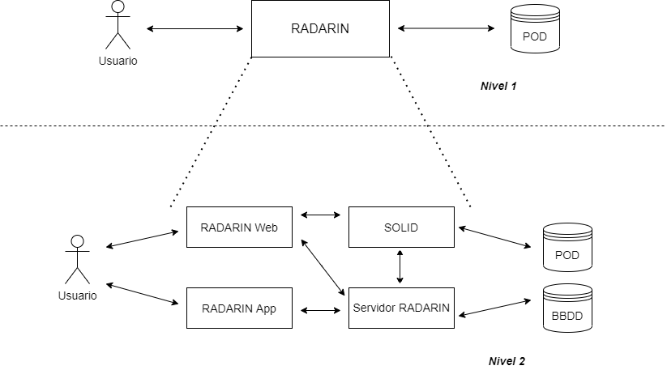
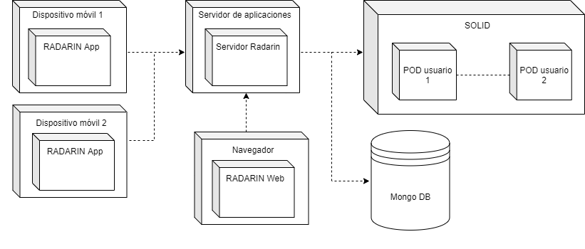
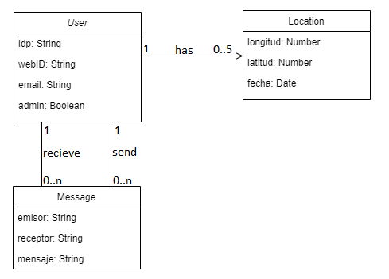
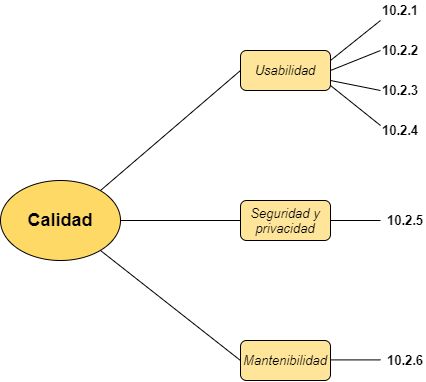

1. Introducción y objetivos
Radarin tiene como objetivo facilitar encuentros entre amigos, accediendo a la información de localización de los dispositivos móviles de aquellos usuarios que la tengan activada, de manera que los amigos de dichos usuarios puedan saber cuando están cerca. Además, el sistema no almacenará información personal de manera centralizada sin el consentimiento de los usuarios, de acuerdo con los principios SOLID.
1.1. Resumen de requisitos
| Requisito | Descripción |
|---|---|
Arquitectura descentralizada |
La aplicación almacenará información de manera descentralizada en Pods siguiendo los principios del proyecto SOLID |
Localización |
Radarin permitirá a los usuarios ver la localización de sus amigos y viceversa, siempre y cuando estos la tengan activada. |
Aplicación web |
Radarin contará con una aplicación web que permitirá gestionar y visualizar las localizaciones, así como gestionar usuarios y monitorizar el estado del servidor en el que funciona dicha aplicación. |
Aplicación móvil |
Radarin contará con una aplicación móvil que enviará localizaciones al servidor y recibirá notificaciones de usuarios amigos y cercanos. |
Almacenamiento de información |
La aplicación web almacenará la información mínima sobre el usuario y sus amigos, el resto de información será almacenada en su pod. |
1.2. Objetivos de calidad
| Atributo de calidad | Escenario |
|---|---|
Seguridad |
Radarin solo podrá acceder y almacenar la localización del usuario si este la tiene activada. |
Privacidad |
Radarin sólo almacenará la información mínima, el resto de información personal será almacenada en el pod personal del usuario. |
Usabilidad |
El sistema debe permitir al usuario visualizar las localizaciones de sus amigos fácilmente, de manera que Radarin pueda ser usado por cualquier tipo de usuario. |
1.3. Stakeholders
| Stakeholder | Escenarios |
|---|---|
Usuarios experimentados |
Mejorar su experiencia anterior con aplicaciones similares a Radarin |
Nuevos usuarios |
Usar la aplicación con facilidad a pesar de ser personas no técnicas. |
Equipo de desarrollo |
Hacer de Radarin un sistema seguro que respete la privacidad de los usuarios y que cumpla con su cometido (facilitar encuentros entre amigos) de la mejor manera posible, pudiendo ser usado por cualquier tipo de usuario. |
SOLID |
Dar visibilidad a las tecnologías descentralizadas y respetar los principios de SOLID a la hora de almacenar la información de los usuarios. |
Personas no técnicas |
Un sistema fácilmente usable por personas no técnicas, que facilite encuentros entre amigos, accediendo a la información de la localización del usuario, siempre respetando la privacidad de este y siguiendo una arquitectura descentralizada. |
2. Restricciones de la Arquitectura
| Restricción | Explicación |
|---|---|
Uso del framework React |
Es una biblioteca de JavaScript de código abierto que facilita la creación de interfaces de usuario cuando se desarrollan aplicaciones web. |
Uso del framework React Native |
Es una biblioteca de JavaScript de código abierto basada en ReactJS que facilita la creación de aplicaciones nativas multiplataforma. |
Uso de la tecnología SOLID |
Se trata de un sistema de persistencia mediante PODs descentralizados. |
Uso de Node.js |
Es un entorno en tiempo de ejecución multiplataforma, de código abierto, para la capa del servidor basado en el lenguaje de programación JavaScript. |
Uso de Git |
Se trata de un software de control de versiones que permite la gestión y la evolución del proyecto de forma correcta, con la ayuda del repositorio remoto que ofrece GitHub. |
Idioma |
Se hará uso del castellano en la realización del proyecto y en la comunicación entre los miembros del equipo. |
3. Alcance y contexto del sistema
3.1. Contexto de negocio
La aplicación web permitirá a los usuarios iniciar sesión con su cuenta de un proveedor de pods (solidcommunity o inrupt). Además, una
vez el usuario ha iniciado sesión en la web podrá ver sus amigos y añadir nuevos o eliminar los ya añadidos. Toda la información de los
amigos se almacenará en el pod del usuario. Además desde la aplicación web se podrá visualizar las localizaciones de los amigos cercanos y
se podrá interactuar con ellos desde el chat en tiempo real.
Por otro lado la aplicación móvil tendrá un inicio de sesión identico de cara al usuario, aunque internamente la aplicación hará una petición
al servidor para que este inicie sesión en su lugar. Con una sesión iniciada el usuario podrá activar la geolocalización para enviar localizaciones y
podrá ver sus datos de perfil, además de pdoer acceder a la lista de amigos y interactuar con ellos usando el chat. El contenido del chat será igual tanto
para la aplicación web como para la móvil.
3.2. Contexto Técnico
Como hemos comentado nuestro sistema está basado en SOLID, el cuál nos permite la descentralización de la web.Así mismo nos suministra el llamado POD; dicho POD nos permite guardar información, como por ejemplo almacenar la localización del usuario de manera segura. Por otro lado, cada usuario tendrá un POD individualizado.
Todo esto estará integrado a través del framework React, el cuál es una librería de JavaScript, que nos facilita y permite construir la interfaz de usuario.
| Interfaz técnica | Descripción |
|---|---|
Solid |
Base general de la aplicación |
POD |
Cada uno de estos usuarios posee un POD, que mantiene la información de este |
React |
Permite generar la interfaz de la aplicación web |
React Native |
Permite generar la interfaz de la aplicación móvil |
4. Estrategia de solución
La aplicación Radarin estará basada en el framework React y en el proyecto de descentralización de datos SOLID. En la siguiente tabla podremos observar las decisiones tecnológicas adoptadas así como su propósito.
| Tecnología usada | Propósito |
|---|---|
GitHub |
Facilitar el control de versiones, así como el trabajo en equipo |
Asciidoctor |
Realizar de la documentación del proyecto de una forma sencilla |
Solid POD |
Aumenta la seguridad del usuario haciendo que la informacion se almacene en un POD de forma descentralizada. Permitiendo así que el usuario decida quién accede a sus datos, o con quién los comparte |
Node.js |
Framework de javascript para el desarollo del back end de nuestra aplicación |
Mongo DB |
Base de datos NoSQL donde guardaremos la mínima información posible |
React.js |
Librería basada en javascript para el desarollo del front end |
React Native |
Librería basada en javascript y reactjs para el desarrollo de aplicaciones nativas |
Express |
Framework de desarollo de aplicaciones para node |
Heroku |
Plataforma para el despliegue de la aplicación |
Teniendo en cuenta los atributos de calidad de este proyecto:
-
Seguridad: Mediante el uso del POD de usuario basado en el proyecto Solid proporcionamos al usuario el control en todo momento de su información de forma descentralizada.
-
Privacidad: El usuario decidirá en todo momento si desea compartir su ubicación para ser notificado, en el caso de que un amigo cercano se encuentre cerca.
-
Usabilidad Mediante el uso de React.js además de algunas librerías obtendremos una aplicación sencilla para usuarios no técnicos.
5. Vista del bloque de construcción
Esta sección consiste en la descomposición de nuestro sistema en bloques de construcción mostrando sus dependencias.
5.1. Diagrama general del sistema

5.2. Sistema general de caja blanca (Nivel 1)
Comenzamos la descomposición mostrando un cuadro en blanco en nuestra aplicación Radarin. En el que encontramos cajas negras.
| Nombre | Responsabilidad |
|---|---|
Radarin |
Aplicación que interactúa con el usuario y el POD. |
POD |
Infraestructura que almacena la información del usuario necesaria para la aplicación. |
5.3. Nivel 2
| Nombre | Responsabilidad |
|---|---|
Radarin Web |
Aplicación Web que interactúa con el usuario, SOLID y Servidor Web. |
Radarin App |
Aplicación móvil que interactúa con el usuario y y Servidor Web. |
SOLID |
Servidor que guarda los PODs. |
Servidor web |
Infraestructura necesaria para acceder a una base de datos con información no almacenada en el POD. Además hace de intermediario para la comunicación entre la aplicación móvil y SOLID. |
6. Vista en tiempo de ejecución
6.1. Escenario 1: Inicio de sesión válido
-
El usuario desea iniciar sesión con su cuenta de Solid.
-
Una vez el usuario ha introducido sus credenciales y ha pulsado el botón de iniciar sesión, la aplicación móvil realizará una petición al servidor en la que enviará las credenciales del usuario.
-
El servidor recibirá la petición y usando las credenciales del usuario intentará iniciar sesión en el pod del usuario.
-
El servidor responderá a la petición con el resultado del inicio de sesión. En caso de que el inicio fuese válido, la aplicación móvil realizará otra petición al servidor en la que solicitará la información personal del usuario. Dicha información será obtenida por el servidor a través del pod el usuario.
El diagrama de secuencia es el siguiente:

6.2. Escenario 2: Notificación amigo cerca
-
Proceso para que un usario sea notificado de que un amigo esta cerca suyo.
-
Para que un usuario pueda ser notificado de que un amigo suyo se encuentra cerca de su posición este primero debe activar la geolocalización en la pestaña de ajustes de la aplicación.
-
Una vez activada la geolocalización, la aplicación envia una petición al servidor donde incluye las coordenadas del usuario.
-
El servidor recibe dicha petición, almacena las coordenadas del usuario y comprueba que amigos de ese usuario se encuentran cerca de su posición en base a las ultimas coordenadas de cada uno.
-
El servidor responde a la petición de la aplicación móvil con el numero de amigos cerca de su posición, y en caso de que este número sea mayor de 0, también se enviará una lista de qué amigos son aquellos que se encuentran cerca.
-
Si el usuario ha activado las notificaciones en los ajustes de la aplicación (por defecto esta opción ya se encuentra activada), cuando se reciba la respuesta del servidor se lanzará una notificación, si la aplicación se encuentra en segundo plano. Además se podrá visualizar dichos avisos desde la ventana de avisos de la aplicación.
El diagrama de secuencia es el siguiente:

6.3. Escenario 3: Enviar mensaje de chat desde el móvil
-
Proceso para que un usario envia un mensaje a uno de sus amigos desde la aplicación móvil.
-
El usuario accede a la lista de amigos. La aplicación recuperará los mensajes haciendo una petición al servidor.
-
Los mensajes serán mostrados al usuario en la vista de la aplicación móvil. A su vez, la aplicación arrancará una tarea asincrona que recargará los mensajes cada 2 segundos.
-
Cuando un usuario escriba un mensaje este se almacenará para luego ser enviado al servidor y que este lo almacene.
El diagrama de secuencia es el siguiente:
7. Vista de implementación
En esta sección, se describe la arquitectura de Radarin, incluyendo la infraestructura de hardware y software para ejecutarla, así como el entorno de ejecución y el middleware que los comunica.

7.1. Dispositivo móvil
Dispositivo desde el que los usuarios accederán a la aplicación móvil. Usando el dispositivo móvil también se podrá acceder a la aplicación web. Este dispositivo podrá disponer tanto de un sistema operativo Android como de un iOS.
7.2. Ordenador
Dispositivo desde el que se accederá a la aplicación web del sistema.
7.3. Aplicación móvil
Aplicación móvil que enviará datos sobre la ubicación del usuario desde el dispositivo de dicho usuario al servidor web del sistema. Esta aplicación también permitirá acceder a la lista de amigos e interactuar con ellos a través de un chat en tiempo real.
7.4. Aplicación web
Aplicación web que permite gestionar la lista de amigos del usuario, visualizar las localizaciones de los amigos que se encuentren cerca y interactuar con dichos amigos a través del chat en tiempo real.
7.5. Servidor web
Servidor que se encarga de almacenar en la base de datos Mongo las ubicaciones recibidas de la aplicación móvil. También es el encargado de almacenar los mensajes provenientes de la web y el móvil. El móvil hace uso de este servidor para poder iniciar sesión en SOLID.
7.6. Heroku
Servidor de alojamiento web que albergará la aplicación web y el servidor.
7.7. Solid
El servidor SOLID donde se encuentran los POD de los usuarios con su información personal al que solo ellos tienen acceso.
7.8. Mongo
Base de datos donde se almacenarán los datos de las ubicaciones de los usuarios recogidas por la aplicación web. También almacenará los mensajes de los usuarios.
8. Conceptos transversales
8.1. Modelo de dominio
A continuación mostramos el modelo de dominio de la aplicación

8.2. Conceptos de experiencia de usuario (UX)
El objetivo de esta aplicacion es proporcionar una experiencia de usuario amigable. Para ello crearemos menús con las opciones más importantes y/o usadas de la aplicación. También, proporcionaremos un diseño atractivo e intuitivo visualmente.
8.3. Conceptos de seguridad y protección
Tanto la seguridad como la protección son nuestros objetivos fundamentales de calidad. Los datos del usuario se almacenaran en su POD, proporcionando así, a su propietario un control total sobre su información, pudiendo este decidir que organizaciones, personas o cualesquiera accedan a sus información, así como revocar estos permisos. La única información que no será almacenada en su POD serán las ubicaciones (solo se guardarán un máximo de 5 ubicaciones por usuario y el usuario podrá borrarlas en cualquier momento) y los mensajes entre usuarios.
8.4. Patrones de arquitectura
Hemos escogido el patrón de arquitectura por capas, este se divide en :
-
1. Capa de presentacion, contiene la interfaz mostrada al usuario.
-
2. Capa de negocio, contiene la lógica de negocio de la aplicación. Es decir, resolverá las peticiones que se hagan contra el servidor o cualquier otro servicio.
-
3. Capa de persistencia, recibirá las peticiones de acceso a datos, tanto de la base de datos como de servicios externos.
El objetivo que se busca con el uso de esta arquitectura es el desacoplamiento total entre capas, pudiendo tener una aplicación mantenible y con alto grado de flexibilidad
Cada capa proporciona servicios a la inmediatamente superior.
8.5. Conceptos de desarrollo
-
Desarollo: La aplicación estará basada en el framework React y el proyecto SOLID, además de Node.js, MongoDb y librerías adicionales de componentes
-
En cuanto a pruebas, hemos hecho las siguientes:
Tipo |
Descripción |
TDD |
Desarrollo guiado por pruebas. Todo lo contrario al desarrollo de software donde se permite que código no testeado se despliegue. |
Aceptación |
Pruebas que comprueban que las especificaciones y los requisitos se cumplen |
Carga |
Pruebas de rendimiento que simulan las diferentes cargas de usuarios que pudiera llegar a tener el sistema. |
9. Decisiones de Diseño
| Decisión | Descripción |
|---|---|
React |
Es la libreria de javascrit que elegimos para desarrollar las interfaces de usuario en la web. |
React Native |
Es la libreria basada en React que elegimos para desarrollar las aplicaciones nativas en móviles. |
Pods |
Aquí se almacenaran los datos de registro (nombre, apellidos…) y amigos. |
GitHub |
Aquí es donde se ubica el repositorio del proyecto. |
Mongo |
Es una base de datos donde vamos a almacenar las rutas y un identificador del pod. |
Arc42 |
Proporciona una plantilla de documentación y comunicación para el desarrollo del proyecto. |
10. Requerimientos de calidad
10.1. Árbol de calidad

10.2. Escenarios de calidad
-
10.2.1 - El usuario podrá acceder a la web y a traves de ella gestionar sus localizaciones.
-
10.2.2 - El usuario podrá acceder a la web y a traves de ella visualizar sus localizaciones.
-
10.2.3 - El usuario será notificado a traves de la aplicación movil que una persona de su lista de amigos esta próxima.
-
10.2.4 - La aplicación movil proporcionará un sistema de monitorización.
-
10.2.5 - La información personal del usuario exceptuando las ubicaciones no serán almacenadas en el servidor sino en su pod.
-
10.2.6 - A través de un servidor de integración continua se llevarán a cabo pruebas de forma automatizada.
11. Riesgos y Deudas Técnicas
| Riesgo | Solución |
|---|---|
ARC42: No estamos acostumbrados a documentar nuestros proyectos y nunca hemos utilizado Arc42 por lo que supone un riesgo. |
Intentaremos aprender todo lo posible sobre el tema para llevarlo lo mejor que podamos. |
REACT: Tenemos unos conceptos muy básicos de Javascript y React es una biblioteca basada en Javascript por lo que podemos tener algún que otro problema. |
Tendremos que leer y documentarnos mucho acerca de Javascript y de todos los componentes de React. |
REACT NATIVE: Es una librería basada en React la cual es nueva para el equipo, con los problemas que eso conlleva. |
Tendremos que llevar a cabo una investigación de sus librerias y componentes más importantes. |
SOLID: Es un campo totalmente nuevo y desconocido para nosotros, ningún miembro del equipo ha trabajado antes con estos principios y existe poca documentación en internet sobre el tema. |
Trataremos de informarnos lo mejor posible a través de internet o proyectos de otros años donde lo han utilizado para aprender a trabajar con SOLID. |
EQUIPO: No nos conocemos de nada entre nosotros y ya ha abandonado un miembro del equipo, puede ser un gran riesgo si no nos organizamos de la manera adecuada y no nos coordinamos bien. |
Intentaremos aportar cada uno nuestro granito de arena al proyecto, nos intentaremos organizar de la mejor manera posible y que no haya discusiones dentro del equipo. |
SEGURIDAD DE LA APLICACIÓN: Proteger la información sensible que haya en los PODS de los usuarios es una actividad imprescindible y por ello supone un riesgo no hacerlo. |
Estudiaremos la mejor manera de hacer nuestra aplicación lo más segura posible para que no existan accesos no deseables y robos de información sensible. |
12. Testing
Ahora vamos a hablar de los tipos de prueba que hemos llevado a cabo:
Pruebas unitarias:
Hemos hecho diversas pruebas tanto para la webapp como para la restapi.
En la webapp, hemos probado los componentes y containers, comprobando que se desplieguen de forma correcta.
En la restapi, hemos probado, que se puedan listar los usuarios, que se creen, que no se puedan crear si existe, que se borre correctamente y que pueda ser creado de nuevo. Además, hemos hecho un test para listar las localizaciones y la que se añada una localización.
Test e2e:
Tests de aceptación variados con cucumber. Hemos realizado los siguiente:
Añadir un amigo.
Añadir un usuario.
Prueba de login.
Visualizar el chat, localizaciones y mensajes.
Pruebas de carga:
Hemos hecho pruebas de carga con gatling.
Para 1 usuario la aplicación web va sin problemas como se puede ver en el diagrama de solicitudes y de respuestas.
Para 100 usuarios la cosa se complica… muchas solicitudes fallan y y también hay errores en el número de respuestas.
13. Glosario
| Nombre | Responsabilidad |
|---|---|
SOLID |
SOLID es una especificación que permite a las personas almacenar sus datos de forma segura en almacenes de datos descentralizados llamados PODS. |
POD |
Los PODS son servidores web personales seguros para almacenar datos. Cuando los datos se almacenan en el POD de una persona, esta controla qué personas y aplicaciones pueden acceder a ellos. |
Arc42 |
Arc42 es una plantilla usada para llevar a cabo la documentación del proyecto. En ella se detalla la arquitectura del proyecto en 12 puntos diferentes. |
React |
React es una biblioteca de JavaScript usada para realizar la página web de Radarin. |
React Native |
React es una biblioteca basada en React usada para realizar la aplicación móvil nativa de Radarin. |
MongoDB |
MongoDB es una base de datos donde se almacenará la información de las ubicaciones de los usuarios. |
About arc42
arc42, the Template for documentation of software and system architecture.
By Dr. Gernot Starke, Dr. Peter Hruschka and contributors.
Template Revision: 7.0 EN (based on asciidoc), January 2017
© We acknowledge that this document uses material from the arc 42 architecture template, http://www.arc42.de. Created by Dr. Peter Hruschka & Dr. Gernot Starke.